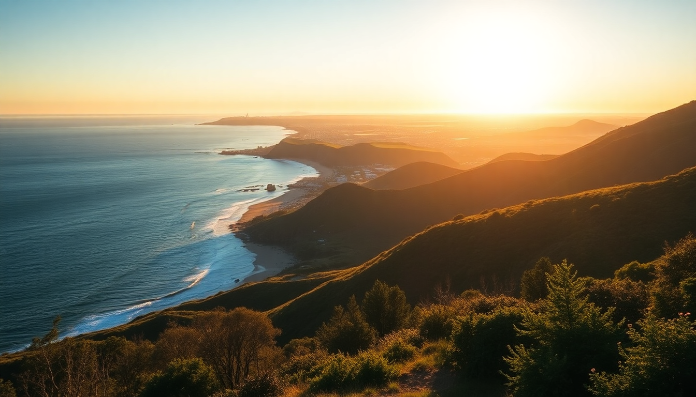

7-Day Australia Itinerary: Sydney, Melbourne & Great Ocean Road

We landed in Sydney on a Tuesday morning, jet-lagged but buzzing. Seven days to hit three big chunks of Australia’s southeast: the harbour city, Melbourne’s laneways, and the coastal drama of the Great Ocean Road. No room for filler. Here’s exactly how we did it, where we ate, what we skipped, and what’s actually worth your time.
How do you split 7 days between Sydney, Melbourne, and the Great Ocean Road?
You don’t get much time, so the split has to be ruthless. We did 3 days in Sydney, 2 in Melbourne, and 2 for the Great Ocean Road drive. That meant a quick flight between Sydney and Melbourne (Jetstar, about 1.5 hours), then a rental car pickup in Melbourne for the coastal leg. It’s tight, but doable if you move early each morning and don’t overplan.
- Sydney (Days 1–3): Base yourself near Circular Quay or Surry Hills for walkability.
- Melbourne (Days 4–5): Stay in the CBD or Fitzroy for laneway access.
- Great Ocean Road (Days 6–7): Drive from Melbourne, overnight in Apollo Bay or Port Campbell.
We used a local eSIM from Airalo for maps and booking on the go — saved us hunting for SIM cards at the airport.
What should you actually do in Sydney in 3 days?
Sydney is bigger than it looks on Instagram. We skipped the Bondi-to-Coogee walk (overrated if you’ve seen one beach) and focused on the harbour core. Day one we walked from the Opera House through the Royal Botanic Garden to Mrs Macquarie’s Chair — that view never gets old. Day two we took the Manly Ferry from Circular Quay, which costs less than $10 AUD and gives you a proper harbour tour for the price of a commute. Day three we hit The Rocks markets in the morning and then climbed the Harbour Bridge with BridgeClimb.
- Lunch at Harry’s Café de Wheels in Woolloomooloo for a pie floater — greasy, iconic, worth it.
- Dinner at Chinatown (specifically the dumplings at Din Tai Chun) — fast, cheap, no booking needed.
- Skip the Sydney Tower Eye; the view from the bridge climb is better.
- Walk from Circular Quay to Barangaroo along the waterfront — quieter than the Opera House crowds.
We stayed at the Sydney Harbour Marriott at Circular Quay. Pricey, but you can walk to the ferry, the train, and the Opera House in under ten minutes. If your budget’s tighter, try The Rocks Bunkhouse for a hostel with character.
Is Melbourne worth the flight from Sydney?
Yes, but only if you like food and coffee. Melbourne feels like a different country — grungier, more European, obsessed with laneway culture. We flew in on day four, dropped bags at The Langham Melbourne on Southbank, and spent the afternoon wandering Degraves Street and Hosier Lane. The street art is real, not a theme park version.
- Coffee at Patricia Coffee Brewers on Little Bourke Street — best flat white we had in Australia.
- Lunch at Supernormal in the CBD for their lobster roll and miso butterscotch sundae.
- Dinner at Chin Chin on Flinders Lane — chaotic, loud, and worth the wait if you go early (5:30 PM).
- Skip the Eureka Skydeck; the view is fine but the Rooftop Bar at QT Melbourne has better vibes.
We used the free City Circle Tram to get around — it’s a retro tram that loops the CBD and costs nothing. For our Great Ocean Road drive, we picked up a rental from Hertz at Southern Cross Station.
How do you drive the Great Ocean Road in 2 days?
This is the part where a lot of itineraries lie. You cannot do the full Great Ocean Road from Melbourne to the Twelve Apostles and back in one day without hating yourself. We drove from Melbourne to Torquay (the official start) on day six, then hugged the coast through Anglesea and Lorne, stopping at every decent viewpoint. Overnight in Apollo Bay at the Seafarers Getaway — a set of pod-style cabins with ocean views and a hot tub.
- Morning stop at Bells Beach in Torquay — famous surf break, even if you don’t surf.
- Lunch at the Apollo Bay Bakery — their scallop pie is the real deal.
- Afternoon at the Twelve Apostles — arrive by 4:30 PM to beat the bus crowds and catch golden light.
- Skip the London Bridge lookout if you’re short on time; it’s a five-minute stop and not much different from the Apostles.
Day seven we drove back inland via the Princes Highway (A1) to save time — it’s less scenic but cuts the return trip to Melbourne Airport to about 2.5 hours. If you have an extra day, take the coastal route back and stop at the Otway Fly treetop walk.
What’s the best way to get between cities in Australia?
Flying is the only sane option for Sydney to Melbourne. We booked Jetstar two weeks out and paid about $80 AUD each. No frills, but the flight is barely an hour. For the Great Ocean Road, you need a car. Public transport doesn’t really exist beyond Torquay. We rented through Hertz and paid extra for the full insurance — read the fine print on gravel road coverage if you plan to detour.
- Sydney to Melbourne: Fly from Sydney Airport (SYD) to Melbourne Tullamarine (MEL).
- Melbourne to Great Ocean Road: Drive via the M1 to Torquay, then the B100 coastal road.
- Return to Melbourne Airport: Take the A1 inland from Port Campbell — about 2.5 hours.
One tip: download offline Google Maps for the Great Ocean Road. Phone signal drops between Lorne and Apollo Bay, and you don’t want to miss the turnoff for the Twelve Apostles.
FAQ
Is 7 days enough for Sydney, Melbourne, and the Great Ocean Road? It’s tight but doable if you move fast and don’t try to see everything. You’ll get a solid taste of each place, but you’ll skip day trips like the Blue Mountains or Phillip Island. If you can stretch to 10 days, add one more night in Apollo Bay and a day in the Yarra Valley.
What’s the best time of year for this itinerary? We went in late February — summer’s tail end, warm but not humid. December to February is peak season with bigger crowds and higher prices. March to April (autumn) is milder and less busy. Winter (June–August) is chilly but the Great Ocean Road is emptier and the whales are migrating.
Do I need a car for the whole trip? No. In Sydney and Melbourne, public transport (trains, ferries, trams) works fine. Only rent a car for the Great Ocean Road leg. Pick it up in Melbourne on day five and drop it at the airport on day seven. Parking in central Melbourne is expensive and annoying.
Conclusion
- Base yourself near Circular Quay in Sydney for harbour access; skip Bondi if you’re short on time.
- Fly between Sydney and Melbourne — it’s cheaper and faster than the train.
- Spend two nights on the Great Ocean Road, not one. Overnight in Apollo Bay or Port Campbell.
- Eat the scallop pie at Apollo Bay Bakery and the lobster roll at Supernormal in Melbourne.
- Book the BridgeClimb in Sydney early in the day for smaller groups and better light.